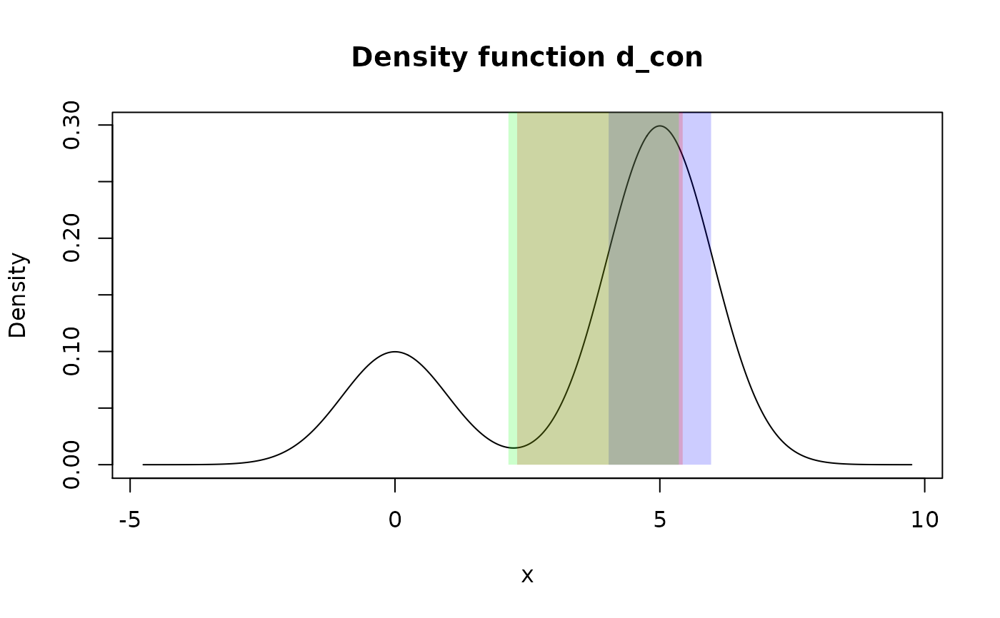

These functions summarize distribution with one interval based on method of choice.
summ_interval(f, level = 0.95, method = "minwidth", n_grid = 10001)| f | A pdqr-function representing distribution. |
|---|---|
| level | A number between 0 and 1 representing a coverage degree of
interval. Interpretation depends on |
| method | Method of interval computation. Should be on of "minwidth", "percentile", "sigma". |
| n_grid | Number of grid elements to be used for "minwidth" method (see Details). |
A region with one row. That is a data frame with one row and the following columns:
left <dbl> : Left end of interval.
right <dbl> : Right end of interval.
To return a simple numeric vector, call unlist() on
summ_interval()'s output (see Examples).
Method "minwidth" searches for an interval with total probability of
level that has minimum width. This is done with grid search: n_grid
possible intervals with level total probability are computed and the one
with minimum width is returned (if there are several, the one with the
smallest left end). Left ends of computed set of intervals are created as a
grid from 0 to 1-level quantiles with n_grid number of elements. Right
ends are computed so that intervals have level total probability.
Method "percentile" returns an interval with edges being 0.5*(1-level) and
1 - 0.5*(1-level) quantiles. Output has total probability equal to level.
Method "sigma" computes an interval symmetrically centered at
mean of distribution. Left and right edges are distant from
center by the amount of standard deviation multiplied by
level's critical value. Critical value is computed using normal distribution as qnorm(1 - 0.5*(1-level)), which
corresponds to a way of computing sample confidence interval with known
standard deviation. The final output interval is possibly cut so that not to
be out of f's support.
Note that supported methods correspond to different ways of computing
distribution's center. This idea is supported by the fact
that when level is 0, "minwidth" method returns zero width interval at
distribution's global mode, "percentile" method -
median, "sigma" - mean.
summ_hdr() for computing of Highest Density Region, which can
summarize distribution with multiple intervals.
region_*() family of functions for working with summ_interval()
output.
Other summary functions: summ_center,
summ_classmetric,
summ_distance, summ_entropy,
summ_hdr, summ_moment,
summ_order, summ_prob_true,
summ_pval, summ_quantile,
summ_roc, summ_separation,
summ_spread
# Type "discrete"
d_dis <- new_d(data.frame(x = 1:6, prob = c(3:1, 0:2)/9), "discrete")
summ_interval(d_dis, level = 0.5, method = "minwidth")#> left right
#> 1 1 2summ_interval(d_dis, level = 0.5, method = "percentile")#> left right
#> 1 1 5summ_interval(d_dis, level = 0.5, method = "sigma")#> left right
#> 1 1.65102 4.34898
# Type "continuous"
d_con <- form_mix(
list(as_d(dnorm), as_d(dnorm, mean = 5)),
weights = c(0.25, 0.75)
)
summ_interval(d_con, level = 0.5, method = "minwidth")#> left right
#> 1 4.032616 5.967419summ_interval(d_con, level = 0.5, method = "percentile")#> left right
#> 1 2.305452 5.430726summ_interval(d_con, level = 0.5, method = "sigma")#> left right
#> 1 2.141451 5.358549
# Output interval is always inside input's support. Formally, next code
# should return interval from `-Inf` to `Inf`, but output is cut to be inside
# support.
summ_interval(d_con, level = 1, method = "sigma")#> left right
#> 1 -4.753424 9.753424#> left right
#> -1.199428 6.906784